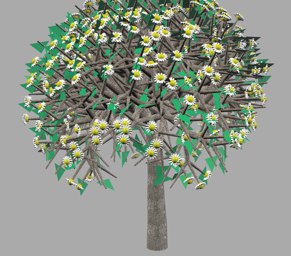

Why you did it?
This was one of the assignments in Computer Graphic course tought by Dr. Jesse Johnson. in the assignment, we were asked to build a tree by using Three.js with the rotation function from 3.js library.
What it does?
The big goal for this project is to practice how to do the rotation in 3.js. Also, in this project, we got a chance to get familiar with the syntax of javascript, and how to apply the texture to your model in 3.js.
How you built it?
I start from the trunk part, which is a cylinder 3d graphic with different radius on each side. Then I wrote nested loops, for the first level, I loop from 0 to 4 which means the entire tree has 5 levels, for the second level, I loop from 0 to pow(4,i+1), pow(4,i+1) is the total number of branches the tree has on the current level,
for the third level of the loop, I loop from 1 to 4 which means each branch (trunck) generate 4 branches for the next level. The 4 branches for the next level rotate -45 degrees on z direction, 45 degrees on z direction, -45 degrees on x direction and 45 degrees on x direction respectively.
After the model of the tree has been built, I applied texture to the model by using THREE.ImageUtils.loadTexture function provided by 3.js. Also I have to use the command "--allow-file-access-from-files" to allow the browser to load the texture.
In the end, I attached an Icosahedron (which is also a assignment in this class) to each branch on the last level as the flower, and a green triangle geometry as the leaf.
What did you learn?
In this assignment, I learned how to use the object.rotation attribute to rotate geometries in 3.js. Also I learned how to use THREE.ImageUtils.loadTexture which is a function provided by THREE.js to load the texture to the geometries.